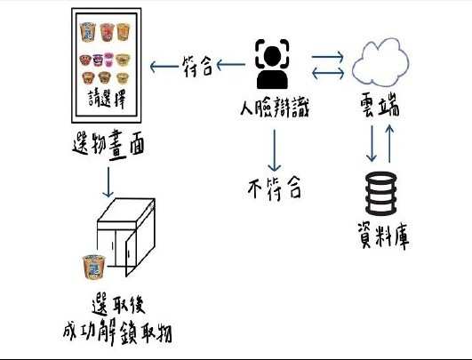

註冊資料
管理者先建立可領取者資料，包含臉部資料或 RFID 驗證碼。
Featured Case Study
以愛心站的實際管理問題為背景，設計「身分驗證、選物、門鎖控制、補貨管理」的流程。這頁把專題拆成問題、技術、流程與未來擴充。
Problem
訪談與資料整理後，常見問題包含物資濫拿、過期或吃剩物資放入、甩門破壞、人力不足，以及真正有需求者拿不到物資。
System Flow
使用者驗證成功後才能選物，再由 Webduino 控制伺服馬達模擬門鎖。流程簡單，至少不像某些系統圖箭頭比人生選擇還多。

管理者先建立可領取者資料，包含臉部資料或 RFID 驗證碼。
使用者可透過人臉辨識或 RFID 完成驗證，降低單一方式造成的限制。
驗證成功後進入選物畫面，系統可記錄領取項目與數量。
Webduino 控制伺服馬達轉動，模擬門鎖開啟，完成領取流程。
Interactive Module
點選不同模組，右側會即時切換說明。
拍攝使用者照片後與雲端資料比對，符合條件才導向選物頁。這讓「誰能領」不只靠人工盯場。
Future
把專題寫到未來展望，會比停在「我做完了」更成熟一點，雖然作業永遠不會真的做完。
臉部資料、電話、地址等敏感資訊需強化加密、權限控管與備份策略。
新增物資保存期限、放入與領取紀錄，並在物資不足時提醒補貨。
導入 Google Map 與站點領取統計，協助管理者判斷不同地區需求。